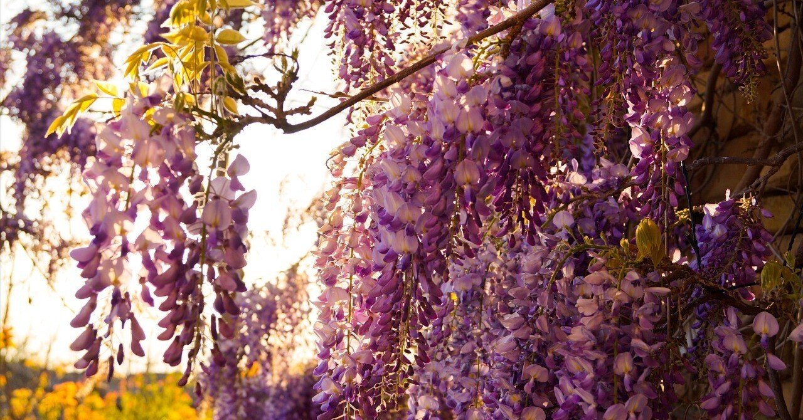

「お花、きれいだなあ」
雨の中、少年は迷いこんだ花園に咲く藤棚を見ていた。
「私は藤の花よ。あなたはまだまだ幼いわ。私が傘になってあげる」
そう言って、藤の花は母のような温かさで、少年を雨から防いだ。
「ありがとう。おかげで濡れずにすんだよ。また来るね」
雨が降り止むと、少年は元気よく駆け出していった。
数年後。成長した少年の背は垂れ下がる藤の花とほとんど変わらなくなっていた。
「藤の花さん。僕、最近勉強いっぱいしてるんだ」
「あなたはまだまだ何も知らないわ。私が香りを教えてあげる」
藤の花は先生のような優しさで、少年にその香りを嗅がせた。
「ありがとう。お花っていい匂いなんだね」
そう言うと、少年は照れた顔をしながら、スキップしてその場所から去っていった。
また数年後。少年はさらに成長し背の高い青年になっていた。少年は若い女性を連れ添っていた。
「藤の花さん。僕には大切な人ができたんだ」
「あなたはまだまだ若すぎるわ。私が愛を伝えてあげる」
藤の花は少女のような可憐さで、少年の心を一瞬にして奪った。
「ありがとう。必ず彼女を幸せにするよ」
少年はそう宣言し、二人は仲睦まじく花園の外に出ていった。
さらに数年後。少年は立派な大人になり、愛する人との間に授かった子どもを連れていた。
「藤の花さん。僕は宝物を見つけたんだ」
「あなたはまだまだやるべきことがあるわ。私が道しるべになってあげる」
藤の花は父のような勇敢さで、少年の顔に風を吹かせた。
「ありがとう。勇気が出たよ。この子を立派に育ててみせるさ」
少年は自分に言い聞かせるように言うと、愛しい子と手をつなぎながら藤の花の前から姿を消した。
さらに時を経て、数十年後。少年の髪はすっかり白くなっていた。
「藤の花さん。僕は仕事も子育てももう引退。これからはゆっくりしようと思うんだ」
「あなたはまだまだこれからよ。私が美しい生きざまを見せてあげる」
藤の花は命の灯(ともしび)のような儚さで、その花びらを散らせた。
「ありがとう。これからも頑張ってみようかな」
そう言うと、少年はゆっくりと街の方へと歩いていった。
そして、さらに数十年が経った。少年はすっかり老体になり、いつの間にか垂れ下がる藤の花より小さくなっていた。
「藤の花さん。わしの人生もそろそろ終わりじゃ。今までありがとう」
藤の花は返事をしなかった。
次第にぽつぽつと雨が降ってきた。少年は藤の花の下に隠れた。
「いつの日か、こんな風に雨宿りしたなぁ」
藤の花はやはり何も言わなかった。
少年は雨の降る風景を見ながら、藤の花の匂いを嗅いだ。
「いつの日か、こんな風に花の匂いを知ったんだよなぁ」
藤の花はただただ雨に濡れていた。
「藤の花さん。聞こえているかい、わしの声が」
すると、藤の花は静かに揺れた。
それは、少年に優しく微笑みかけるようだった。
「あなたはよく生きたわ。見事な花を咲かせたのよ」
藤の花は最後の別れを惜しむように言った。
「藤の花さん。まだまだ教えてください。僕はあなたの優しさに何度も救われたのですから」
少年は励ますように言った。
あの頃のような純粋な瞳で藤の花を見上げながら、そう言ったのだった。